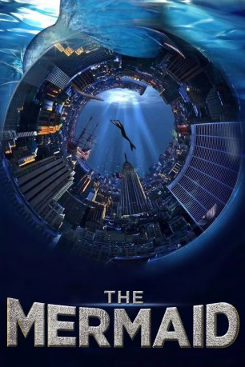

#7544 The Mermaid
 
 IMDB-Wertung: 6.3 / 10
IMDB-Wertung: 6.3 / 10  Metascore: 0
Metascore: 0 
In der Fantasy-Komödie kauft ein reicher Playboy ein Dolphin-Reservat, das er illegal platt machen will, um das Land für andere Zwecke zu nutzen. Eine wunderschöne Meerjungfrau will dies verhindern, indem sie den Baumogul erst verführen und dann ermorden will. Doch dann verliebt sie sich in ihn….
Jahr: 2016
Dauer: 93 Minuten
FSK: 12
Land: China Studio: Capelight PicturesTonspuren:
Untertitel: Deutsch,
Auflösung: 1080p (1920x1008) Größe: 6922 MB
Genre: Drama, Komödie, Fantasy, Liebe
Regisseur:  Stephen Chow
Stephen Chow
Drehbuch: Hing-Ka Chan
Soundtrack:
Darsteller:
- Chao Deng als Liu Xuan
- Show Lo als Octopus
- Yuqi Zhang als Li Ruolan
- Yun Lin als Shan
 Hark Tsui als Uncle Rich
Hark Tsui als Uncle Rich- Zhang Wen als Constable Mr. Mo
- Kris Wu als Long Jianfei
 Chi Ling Chiu als Mermaid Long
Chi Ling Chiu als Mermaid Long- Tze Chung Lam als Technician
- Ivan Kotik als George
- Mingze Liu als Mermaid
 Kai Man Tin als Laughing man
Kai Man Tin als Laughing man- Sheung-ching Lee als Constable Mr. Shi
- Zhengyu Lu als Mr. Liao
- Mei'e Zhang als Mermaid
- Linah Matsuoka als George's Assistant
- Barbie Liu als Mermaid
- Zhen Zhen Xu als George's Assistant
- Bai-Ke als Museum Visitor
- Lianshun Kong als Museum Visitor
- Wilson Chin als Mermaid Fat
- Jifeng Zheng als Cheng
- Shu Zhen Fan als Mermaid Shitai
- Pierre Bourdaud als The Auctioneer
- Neng Yang als Curator
- Fuyi Liu als Dancer
- Bo Xiaolong als
Datei: X:\HD-Eastern-Modern(A-M)\Mermaid, The (2016, FSK12, 1920x1008).mkv seit 20.11.2017
Festplatte: HD Eastern+Western
 Es gibt insgesamt 104 Filme in der Gruppe 'HD-Eastern-Modern(A-M)'
Es gibt insgesamt 104 Filme in der Gruppe 'HD-Eastern-Modern(A-M)'